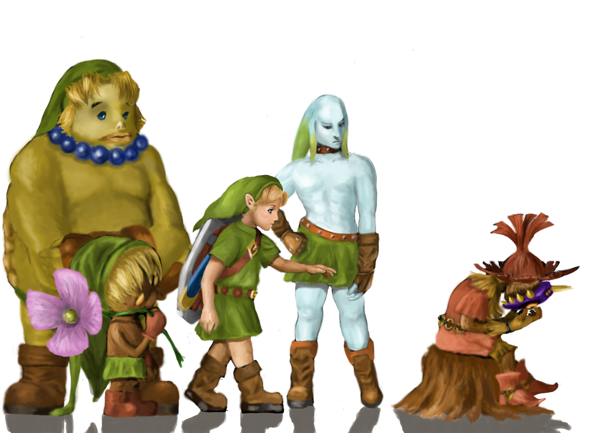
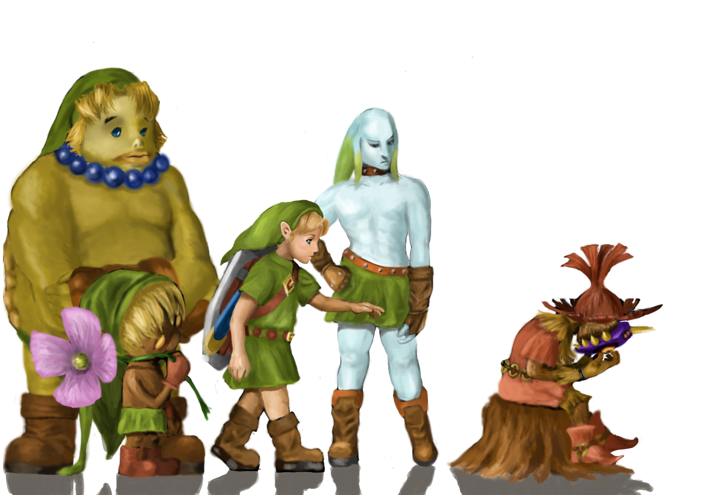

ABOUT
陣出 健太
(JINDE KENTA)
初めまして、陣出健太と申します。現在は大阪市の中学校で事務職員をしており、公務員として働いております。
プログラミングについては2020年10月より独学で勉強を開始し、フロントエンドの基礎と、それに伴うバックエンドの基礎を習得しました。勉強の教材は主にドットインストールやUdemy等の動画教材を用い、次いで電子書籍やMDNで分からない部分を補完し、さらに細かい部分はStack OverflowやQiita、teratailといったQ&Aサイトを参考にしました。
勉強方法として独学を貫徹したことで、プログラミングにおいて必ず必要となる「調べる力」を身に着けることができました。また毎日勉強をする習慣や、プログラミング学習のメソッドを自分の中で作れたのも、大きな収穫となりました。
何よりも先ず楽しむことをモットーに、日進月歩で進んで行く技術トレンドをキャッチアップしていきたいと思います！
余談ですが、趣味でたまに絵を描きます。。
 

SKILL

基本的なタグとその属性は学習済み。今後はhtmlにおけるSEO対策について深く勉強していきたい。
Bootstrapや、Sass(SCSS)について学習済み。今後はさらなる技術の拡張と、メンテナンス性について勉強していく。
クラス構文や、非同期処理、コールバック関数など学習済み。今後は開発効率などを考えて、Typescriptについて勉強していく。
crud機能を備えた、簡単なTodo管理アプリは作成可能。今後さらに勉強を進めていき、先ずは簡単なSPAサイトを作成したい。

webアプリケーションの仕組みを1から知るために学習。今後はフレームワークのLaravelや、Ruby on Railsを本格的に学習していく。
基礎的なSQL構文について学習済み。今後は再帰CTEや正規化、インデックスなどを用いたより複雑なデータベース設計に挑戦する。
Docker利用の流れや、Docker Composeについて学習済み。今後はCIツールについて勉強し、Dockerを用いたCICDパイプラインの構築を行う。
Git、GitHubについての基本コマンドや仕組みを学習。今後は複数人での開発を想定して、rebaseやmergetoolについて勉強していく。